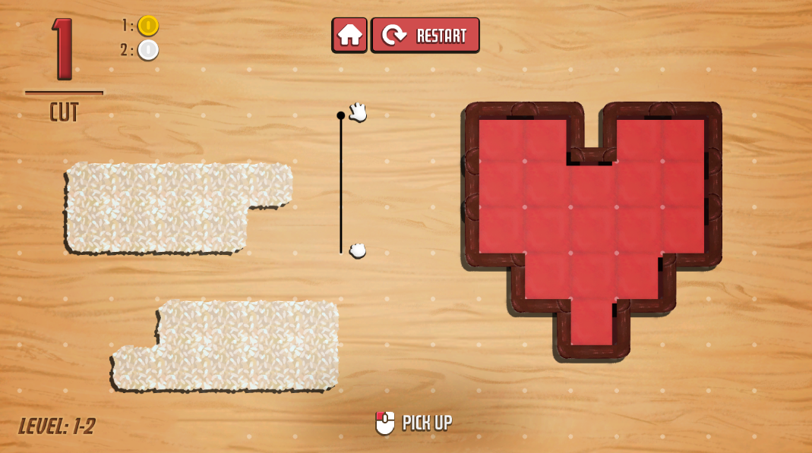
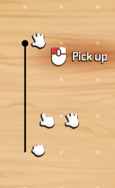

Back
Bento Blocks Dev-Log: User-Centered UI design
May 2024:

Prototype
During the early prototyping of Bento Blocks, we conducted user testing with friends to gather preliminary feedback. This helped shape our UI and UX, balancing usability and thematic (Cozy) consistency. Below is a summary of the feedback we received, along with our design responses to enhance gameplay and interface clarity.
Summary of Player Feedback
- Enable cutting while holding the knife for continuous interactions.
- Clarify objectives and the star reward system.
- Enhance cutting interactions for a more satisfying.
- Players appreciated that the game could be completed with any number of cuts.
- Some players found the interface difficult to navigate. They did not know how to use the knife.
- Add a grid overlay to help players visualize the game space.
- Improve clarity around the knife’s functionality.
Design Responses #1
To enhance player interaction clarity and subtly teach players about their actions in a diegetic context, a reactive cursor system was implemented.This acts as a tutorial, dynamically adjusting the cursor sprite based on the item currently held and the object beneath it, providing intuitive feedback without explicit instructions.
Cursor design mock-u
- Talk about skeumorphic/diegetic UI design. UI still in game-space. Knife-Cut to communicate that reward structure.
The feedbacks leads to interface design such as the Cursor being reactive-- it changes sprites based on which object it's currently hoving over and the current state it's on (isGrabbingPiece, isGrabbingKnife).
References
| ↑ | [1] | Thomas, F., Johnston, O. (1981). The Illusion of Life: Disney Animation. Hyperion. pp. 47–69. |